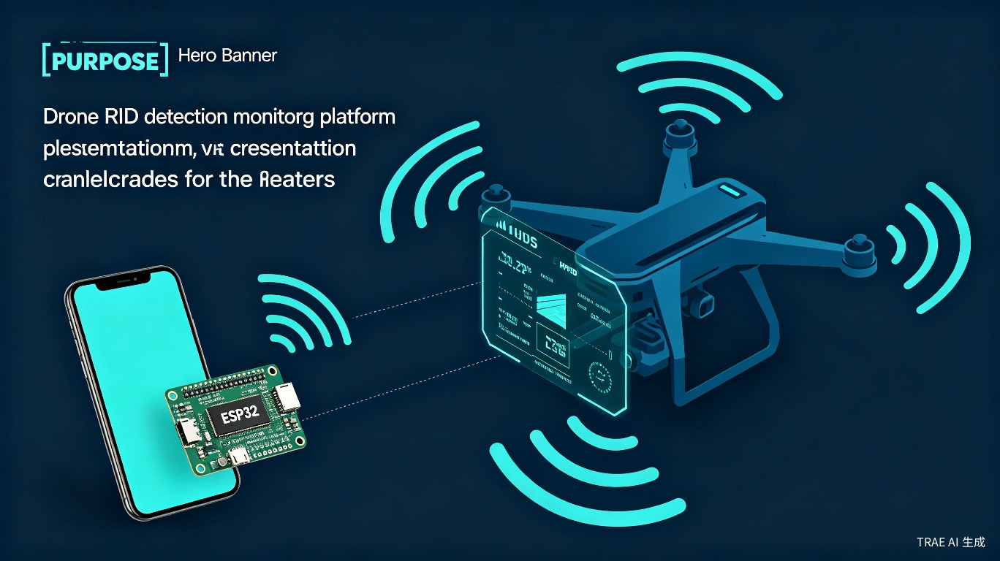
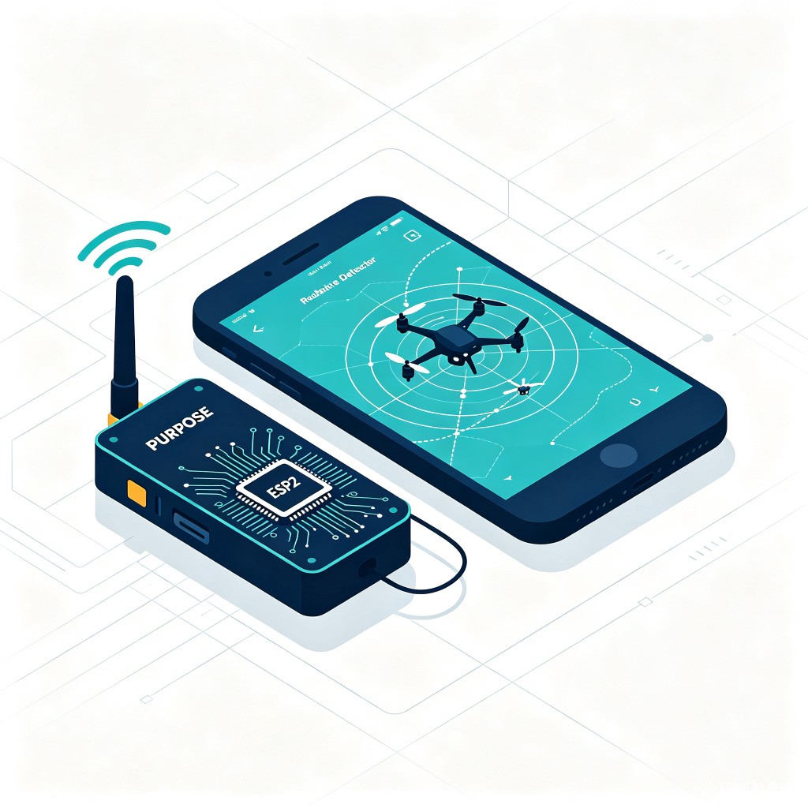
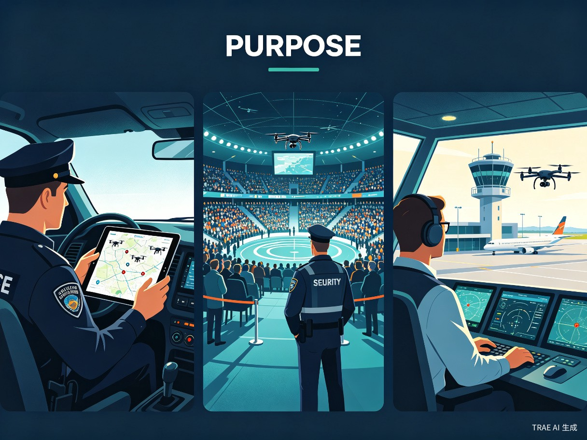

产品形态
本产品由两部分组成：便携式 ESP32 硬件探测模块与智能手机 APP。硬件模块负责接收无人机 Remote ID（RID）广播信号，解析出无人机的身份、位置、高度、速度等信息；APP 通过蓝牙/Wi-Fi 与模块连接，将数据以可视化方式呈现在地图上，实现实时态势感知。
核心能力
- 实时接收并解析无人机 RID 广播数据
- 在地图上直观展示无人机位置与飞行轨迹
- 自动识别违规或可疑目标并推送预警
- 反向推算飞手大致位置，辅助快速处置
- 支持历史数据回放与飞行记录存档

小巧便携、实时态势感知、快速定位飞手 —— 为低空安全管控打造的智能终端解决方案
当前无人机探测器笨重不便携，串口日志和通用工具无法满足实时态势感知和快速响应的需求。
公安及安保人员需要快速、直观地掌握周边空域无人机动态，包括身份、位置、高度、速度、飞行方向，并对违规或可疑目标及时预警。当前市面上的解决方案存在以下痛点：
常见无人机探测器体积大、重量沉，不便于一线民警随身携带和快速部署。
依赖串口日志和通用工具，数据呈现碎片化，无法形成直观的空域态势图。
缺乏实时预警机制，发现"黑飞"后再定位飞手耗时较长，错失最佳处置窗口。
现有工具无法快速反向定位飞手位置，导致"看得见无人机，找不到操控者"。
在日常工作中发现，常见的无人机探测器较为笨重、不方便携带，而一线执勤人员迫切需要一款小巧方便携带的设备，配合直观的飞手定位软件，实现随时随地的空域监控能力。这一需求在大型活动安保、机场净空保护、重点区域巡逻等场景中尤为突出。
APP + 基于 ESP32 的拓展模块，打造轻量化、低成本的无人机 RID 探测监控终端。

本产品由两部分组成：便携式 ESP32 硬件探测模块与智能手机 APP。硬件模块负责接收无人机 Remote ID（RID）广播信号，解析出无人机的身份、位置、高度、速度等信息；APP 通过蓝牙/Wi-Fi 与模块连接，将数据以可视化方式呈现在地图上，实现实时态势感知。
| 对比维度 | 传统无人机探测器 | 本方案 |
|---|---|---|
| 体积重量 | 较大，需专用背包或车辆携带 | 手掌大小，可放入口袋 |
| 成本 | 数万元至数十万元 | 硬件成本低于 200 元 |
| 数据呈现 | 串口日志或 PC 端软件 | 手机 APP 地图可视化 |
| 部署速度 | 需架设天线、连接电脑 | 开机即测，秒级响应 |
| 飞手定位 | 部分支持，需专业操作 | 自动推算，直观标注 |
面向公安、特警、安保指挥员及空域安全监管人员，解决"黑飞"发现难、定位难、处置慢的痛点。

在巡逻执勤中发现并处置"黑飞"行为，需要快速获取无人机身份信息及飞手位置。
在大型活动现场监控空域安全，及时发现并拦截未经授权的无人机飞行。
保障机场净空区安全，防止无人机干扰航班正常起降，需要大范围空域监测能力。
在警务工作站、指挥车内或临时监控点，通过手机监控周边无人机飞行活动。典型场景包括：
提升低空安全管控能力，保障公共安全，防范"黑飞"带来的多重风险。
提升低空安全管控能力：通过低成本、广覆盖的探测终端，构建"最后一公里"低空感知网络，填补现有大型雷达/频谱监测系统的盲区，实现对低慢小目标的有效管控。
保障公共安全：及时发现并处置违规飞行行为，防范无人机对人群聚集场所、关键基础设施的潜在威胁，为城市安全运行提供技术支撑。
防范"黑飞"风险：有效应对无人机带来的隐私泄露（偷拍）、碰撞风险（干扰民航、坠落伤人）和恐怖威胁（携带危险物品）等多重安全隐患。
及时发现偷拍无人机，保护公民个人隐私和敏感区域信息安全。
防止无人机与民航客机、直升机等载人航空器发生危险接近或碰撞。
为大型活动、重要会议提供可靠的低空空域安全保障能力。
基于 ESP32 的轻量化硬件方案，配合跨平台移动应用，实现低成本、高效率的无人机 RID 探测能力。
| 模块 | 功能说明 |
|---|---|
| ESP32-S3 主控 | 双核处理器，支持 Wi-Fi 4 / BLE 5.0，负责信号处理与数据解析 |
| 2.4GHz 射频前端 | 接收无人机 RID 广播信号（Wi-Fi Beacon / BLE 广播） |
| GPS 模块 | 获取设备自身位置，用于相对定位与坐标换算 |
| 蓝牙/Wi-Fi 通信 | 与手机 APP 建立连接，实时传输解析后的无人机数据 |
| 锂电池供电 | 支持 8-12 小时连续工作，Type-C 充电接口 |
flowchart LR
A[无人机 RID 广播] --> B[ESP32 射频接收]
B --> C[信号解析与解码]
C --> D[蓝牙/Wi-Fi 传输]
D --> E[手机 APP 可视化]
E --> F[预警与飞手定位]